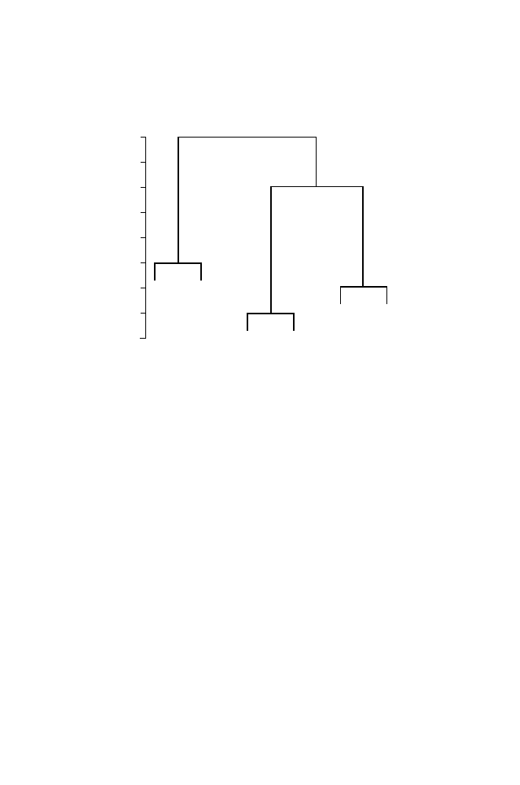

10.4 Clustering
277
Height
0.00 0.10 0.20 0.30 0.40
A
B
E
F
C
D
Fig. 10.4.
Dendrogram illustrating numbers of clusters for different distance crite-
ria.
and 0.15, we would define three clusters; the number of clusters is somewhat
arbitrary.
Another issue (mentioned in the previous section) is the reliability of the
particular clustering that has been produced by the procedure. The hierarchi-
cal method has a number of limitations:
1. The choice of distance measure is important. Methods for incorporating an
evolutionary model into the comparison of DNA sequences are discussed
in Chapter 12.
2. There is no provision for reassigning objects that have been incorrectly
grouped. The method proceeds in a bottom-up fashion and, once joined
to a cluster, an OTU remains at that position in the hierarchy.
3. Errors are not handled explicitly in the procedure.
4. No single method of calculating intercluster distances is universally the
best. We need to test the results by using different definitions of inter-
cluster distance. In some “head-to-head” tests, single-linkage clustering is
reportedly least successful and group average clustering tends to do fairly
well. For a review of the problem, see Everitt and Dunn (2001).
5. Single-linkage clustering may tend to join clusters whose centroids are
fairly distant if these clusters are joined by a chain of OTUs.
It is important to know how
robust
the hierarchical method is in any
particular application. (A statistical method is called robust if it works well for